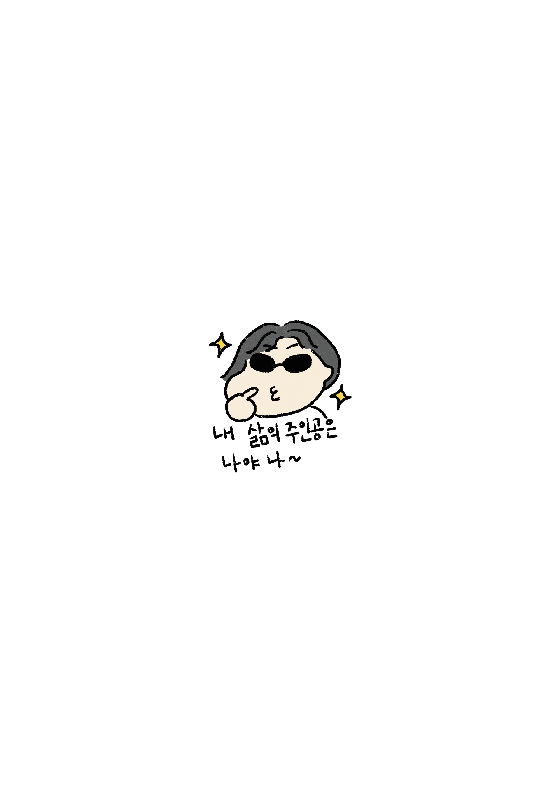
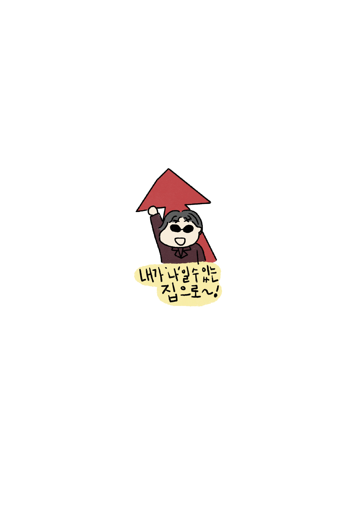

AM 05:00 - AM 06:50
-
엑시트 활동가 정래의 글
앞으로 내가 이 고시원 방보다 넓은 크기의 거처를 경제면에서건 생활면에서건 책임지는 사람이 될 수 있을까 하는 막막함. 형광등 두 짝 중 한 짝에 불이 들어오지 않는 고시원 방에 누워 천장을 바라보고 있자면 그런 꽁한 마음들이 자꾸만 밀물처럼 밀려온다.
고시원에서 사는 건 괜찮다. 정말 괜찮다. 고시원살이는 내 체질에도 맞고 분수에도 족하다. 하지만 고시원에서 죽는 건 괜찮지 않다. 지난 목요일 밤, 왼쪽 가슴이 쥐어짜이듯 답답했다. 숨도 턱턱 막혔다. 그냥 그런가보다 했는데 1시간 넘게 가슴이 답답했다. 어라, 이상하다. 몸이 왜 이렇지. 어떤 증상인지 열심히 구글링해봤다. 호들갑일지 모르지만 큰병 아닌가 싶어 너무 걱정됐다. 심근경색 같은 건 아닐까. 꽤 비만하고 고지혈증까지 있는 시원찮은 몸인지라 큰병 아닐까 하는 의심이 더욱 그럴듯했다. 답답한 가슴을 부여잡고 의심이 깊어질 때쯤 되니 밤 1시였다. 응급실에 갈 수는 없다. 응급실 비용을 감당하기에는 이번 달 술값에 돈이 너무 많이 나갔다. 별 것 아니겠지 싶다가도 만약에, 진짜로 만약에 큰병이면 어쩌지. 나 죽으면 어떻게 하지. 아니야, 사람 그렇게 쉽게 죽겠어. 아니지, 그래도 만약에 죽으면. 죽으면 어떻게 해. 여기 고시원이고 나 찾는 사람도 없는데. 고독사하면 어떻게 해. 죽고 나서 한달 뒤에 발견되면 어떻게 해. 죽는 것보다 혼자 죽는 게, 고독사하는 게 더 두렵다.
서울에 연고가 있는 것도 아니고 걱정해서 집까지 찾아와줄 사람도 없다. 고독사하기가 너무 싫은 내가 내린 결정은 사무실에 가서 자야겠다, 였다. 일단 사무실에 가서 자면 다음날 출근한 사람이 발견이라도 해주지 않을까 싶어서. 그러면 고독사는 면할 것 같아 택시를 잡고 사무실로 갔다. 어이없는 결론같지만 당시엔 그게 내가 내릴 수 있는 가장 합리적인 선택이었다. 마침 다음날 아침 일찍 출근해야할 일이 있기도 했다. 기사님, 영등포 가주세요. 양화대교를 넘어 사무실에 도착했다. 대강 누울 자리를 만들어 얼른 누웠다. 자리는 제법 싸늘했다. 하지만 그런 건 아무래도 괜찮았다. 이 밤이 지나면 혼자이지 않을 수 있는 공간에 있다는 것만으로도 안도가 됐다. 다행히 별일 없었다. 잘 잤다. 잘 자고 일어난 다음날 아침 출근한 동료가 나를 깨웠다. 사람이 너무 반가웠다. 그리고 아무일 없어서 참 다행이라고 생각했다. 고독사는 면했으니까.
괜한 호들갑이었을 수 있다. 결과적으로 내 몸은 멀쩡했으니까. 그렇지만 두려웠다. 외로움은 관계의 부재뿐 아니라 그 이상이고, 죽음은 삶의 부재뿐 아니라 그 이상이다. 고시원은 외로움과 죽음이 공존하기 쉬운 공간이다. 고시원은 살기에 나쁘고 말고를 떠나 죽기에는 최악의 공간이다. 그래서 매일매일 생각하게 된다. 어떻게든 아득바득 살아남아야지, 하고. 이렇게 외롭게 죽으면 억울하고 서럽기 그지없다고. 삶다운 삶에서 멀어질수록 삶의 동아줄을 굳게 붙잡는다. 고시원을 옮긴지 두 달이 되어간다. 건대에서 홍대로 이사했다. 요새는 비대면 강의가 많아져서 대학가 고시원 방값이 좀 떨어졌다고 한다. 원래 살던 곳보다 방값이 싼 곳으로 이사했다. 화장실과 욕실이 공용인 대신 방 크기는 더 넓어졌다.
새 고시원에서 생활하다보니 생활하는 면면에 바뀐 점이 많다. 원래 살던 건대 인근의 고시원은 동네가 제법 사람 사는 냄새가 났다. 번화한 고층 빌딩과 허름한 골목의 병존이라는 서울 특유의 극단이 덜한 동네라고 느끼곤 했다. 홍대는 정 반대다. 합정에서 홍대 사이까지, 메세나폴리스부터 시작해 빌딩이 늘어서있다. 길 안쪽 구석구석이 번화하다. 물론 인근에 연남동이나 망원동, 상수동으로 가면 분위기가 조금 다르긴 하지만 내가 살게 된 고시원은 서교동 한복판이다. 집으로 가려면 번화한 거리를 지나 골목으로 들어가야 한다. 버스에서 내려 집으로 가는 길에는 타이마사지샵을, 토킹바를, 테마가 다양한 술집들을, 편집샵을 지나쳐야 한다. 오래된 세탁소와, 오래된 백반집과, 오래된 이용원이 집에 가는 길에 늘어서 있던 건대와는 사뭇 다른 풍경이다. 거리에 사람이 더 많이 보이는 곳으로 터를 옮겼지만 왜인지 사람 사는 냄새는 덜해진, 그런 풍경. 오래 살 곳은 아닌 것 같다.

